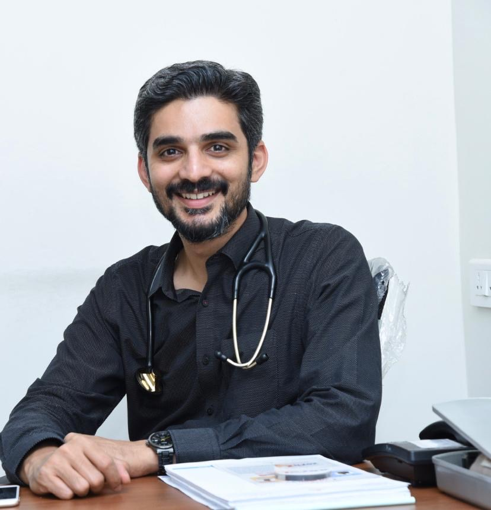
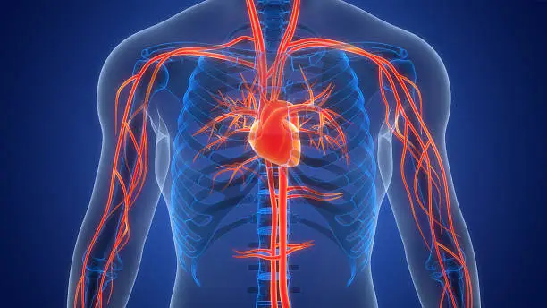
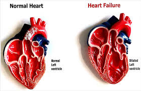
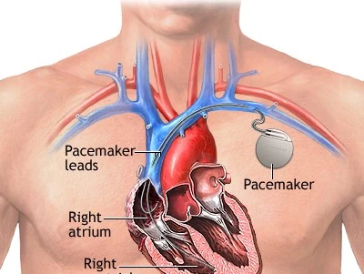

Specialist in cardiac arrhythmias, pacemaker & heart failure device implantations, electrophysiological studies, and radiofrequency ablation — Mangalore.

Cardiac Electrophysiologist with expertise in the field of cardiac arrhythmias. Areas of specialisation include pacemaker and heart failure device (CRT / defibrillator) implantations, electrophysiological studies, and radiofrequency ablation.
Committed to personalised, evidence-based cardiac care — taking the time to explain every diagnosis and treatment option clearly to patients and their families.

Dr. Maneesh Rai is a Cardiac Electrophysiologist with expertise in the field of cardiac arrhythmias. His areas of specialisation include pacemaker and heart failure device (CRT / defibrillator) implantations, electrophysiological studies, and radiofrequency ablation.
He holds an MD and DM in Cardiology, along with a Fellowship in Cardiac Electrophysiology, and practises across multiple locations including KMC Hospital in Mangalore — bringing advanced cardiac care to the region.
KMC Hospital · Maithri · RVR
Advanced arrhythmia management
Pacemakers, CRT, Defibrillators
Full-day availability across clinics
Comprehensive cardiac care using evidence-based protocols and modern technology.
Comprehensive diagnostic testing to identify the cause of fainting or loss of consciousness, including Tilt Table Tests, Holter monitoring, and loop recorders to ensure patient safety and prevent recurrence.
Advanced management of irregular heart rhythms through pharmacological therapy, electrical cardioversion, and invasive procedures like EP studies and radiofrequency ablation to restore normal heart rhythm.
Evidence-based treatment strategies focusing on medication optimization, lifestyle modification, and advanced device therapies like CRT and ICDs to improve heart function and quality of life.
Comprehensive evaluation and long-term management of high blood pressure including 24-hour ambulatory BP monitoring, lifestyle counselling, and personalised medication plans to protect heart, brain and kidneys.
Specialised outpatient clinic for the periodic interrogation, testing, and adjustment of pacemakers, CRT devices, and defibrillators to ensure optimal device performance and battery longevity.
Advanced minimally invasive testing to map the heart's electrical system, identifying the exact origin of arrhythmias and providing definitive treatment through targeted catheter ablation.
In-depth articles written by Dr. Maneesh Rai to help you understand your heart condition.

Understanding Cardiac Resynchronization Therapy (CRT) — what it is, who benefits, and what the implant procedure involves.
Read Article
What is a pacemaker, who needs one, the implantation procedure, risks involved, and how to live normally after surgery.
Read ArticleUnderstanding the differences helps you make the right decision for your heart health.
Requires a surgical implant and is the most affordable option. It carries a slightly higher infection risk and a small (<10%) chance of worsening heart failure compared to newer alternatives — but remains effective and widely used.
The most physiological form of pacing — closely mimics the heart's natural electrical pathway, resulting in very low risk of worsening heart failure. Requires a surgical implant and carries a similar infection risk to conventional pacing.
No surgery required — inserted via a catheter approach. Allows early mobilisation with minimal post-operative pain and a very low risk of infection. Ideal for elderly patients. The only drawback compared to other options is the higher cost.
A glimpse into the modern cardiac procedures performed by Dr. Maneesh Rai.
A miniature pacemaker the size of a vitamin capsule, implanted directly inside the heart through a vein in the leg — no chest incision, no visible scar, fastest recovery.
"Taking a bow. This doc saved my dad's life with his expertise and skills. Extremely passionate about his profession. Gem of a person who genuinely cares about the patients and their families too during the testing times. Also not to forget we were taken by surprise when we received a WhatsApp message from him checking on dad's health condition post treatment. God bless him."
"I would like to express my heartfelt gratitude to Dr Maneesh Rai for his expertise. His thorough approach, clear communication and compassionate demeanor always puts me at ease. Dr Maneesh never rushes to prescribe medicine, if he feels a person can improve with lifestyle changes. I feel fortunate to have been under his care and highly recommend him to anyone seeking a compassionate and knowledgeable healthcare provider."
"Dr. Maneesh put a double chamber pacemaker in my 87 year old Mom, 3 months ago. She is very healthy and walking around. He is a very good electrophysiologist. Very caring and compassionate person. I highly recommend him."
"I am extremely grateful to Dr. Maneesh Rai for the exceptional care he has provided during my mother's surgery. From the very beginning, he has demonstrated a keen ability to diagnose her condition accurately and promptly, which ultimately made a world of difference in her treatment in time as it was time sensitive and critical. His expertise, along with his compassionate approach, gave us the confidence we needed throughout the entire process. Dr. Rai took the time to explain every step, ensuring we understood what to expect, and his continued support and guidance after the surgery have been invaluable. We are truly thankful for the dedication and skill he has brought to my mother's care, and we are very happy with the results. I highly recommend Dr. Maneesh Rai to anyone in need of cardio related medical care. Thank you Dr. Maneesh."
Consultations across Mangaluru at KMC Hospital, Maithri, and RVR. Reach out via phone or WhatsApp for prompt booking.
4th Floor, KMC Hospital Dr, B R, Ambedkar Circle
Mangaluru, Karnataka 575001
Blasius D'Souza Road, Next to Hotel Maya International
Bendoorwell, Mangaluru, Karnataka 575001
Opposite Highland Hospital, Mother Theresa Road,
3rd Floor, Landmark AYUSH, Falnir, Mangaluru, Karnataka 575002
| 10:00 AM – 12:30 PM | KMC Hospital, Ambedkar Circle |
| 2:30 PM – 4:30 PM | Maithri Clinics, Bendoorwell |
| 4:30 PM – 6:30 PM | RVR Super Speciality Centre, Falnir |
Select your preferred clinic location and follow the booking instructions below to confirm your slot.